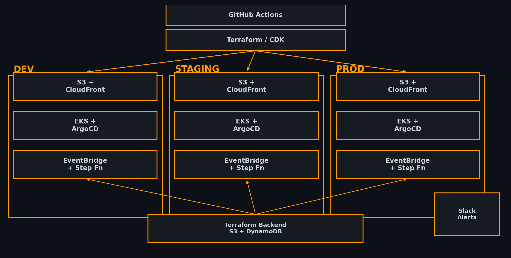

A comprehensive reference implementation demonstrating how to build production-grade infrastructure on AWS with IaC, GitOps, monitoring and CI/CD. This light theme site is hosted via GitHub Pages. A dark theme version is also available.
Managed Kubernetes cluster with GitOps continuous delivery using ArgoCD. Supports multi-environment deployment patterns and automatic sync of manifests to your clusters.
S3 buckets with CloudFront provide low‑latency hosting for static websites, SPAs and assets. Use GitHub Actions to publish your site to AWS in minutes.
Example pipelines with EventBridge and Step Functions allow you to build loosely coupled, serverless architectures for background processing and integrations.
CloudWatch dashboards and SLO alerts keep track of availability and latency. Slack notifications via SNS/AWS Chatbot deliver real‑time incident awareness.

Prefer a darker look? Switch to the dark theme